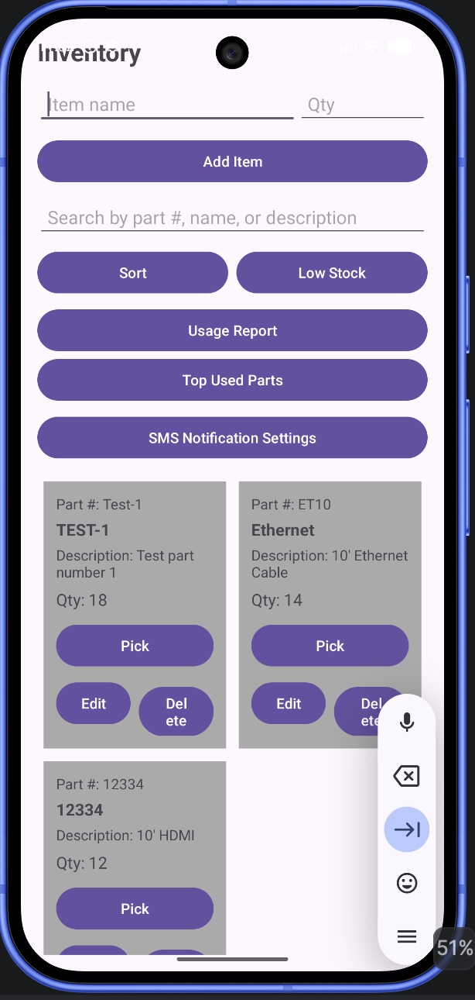
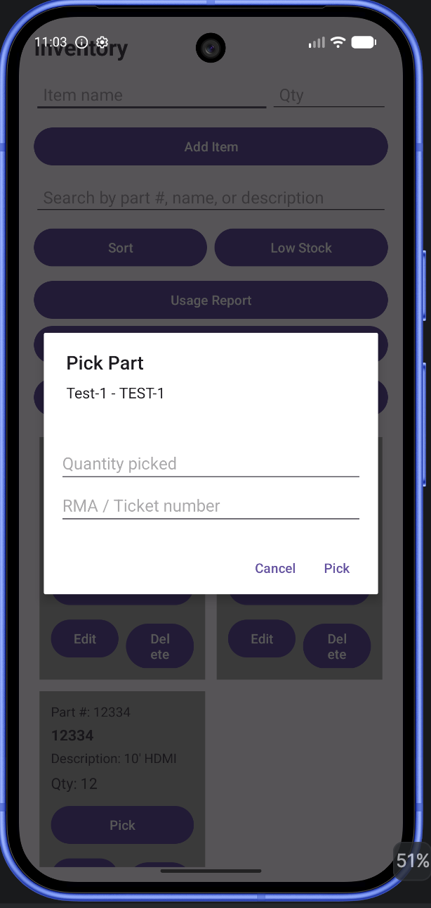

This enhancement focused on improving the Android Inventory Management Application through better software design, expanded functionality, validation improvements, and a more realistic inventory workflow.
The enhanced inventory screen includes part numbers, descriptions, inventory quantities, search functionality, reporting options, and inventory picking features.

The inventory picking workflow allows users to record quantities picked and associate each transaction with an RMA or ticket number.

The artifact I selected for this enhancement is my Inventory Management App that I originally created in CS 360. This app was built in Android Studio using Java, XML layouts, and a SQLite database. The original purpose of the app was to let a user log in and manage inventory items by adding, deleting, and updating quantities. It also had SMS notification features for low inventory. I chose this artifact because it was a good starting point, but it also had a lot of room to be improved into something more realistic and useful.
I included this artifact in my ePortfolio because it shows skills that connect directly to software design and engineering. It demonstrates my ability to build a working mobile application, connect the app to a database, design screens for users, and organize application logic using Java classes. I also liked that this project gave me the opportunity to improve existing code rather than start from scratch, which reflects how software development often works in real-world environments.
For this enhancement, I expanded the inventory system by adding part numbers and descriptions, inventory picking functionality, RMA or ticket number tracking, validation improvements, and usage reporting capabilities.
I also created a pick history table that stores information such as part number, quantity picked, ticket number, and transaction date. This allows inventory activity to be tracked over time instead of only updating quantities.
The application follows a structured design that separates responsibilities between the user interface, business logic, and database layers. InventoryActivity serves as the main user interface, InventoryAdapter handles displaying records within the RecyclerView, and DatabaseHelper manages database operations and persistence. This separation improves maintainability and makes future enhancements easier to implement.
One challenge I encountered was that changes to the database and model classes affected multiple parts of the application. Adding part numbers and descriptions required updates to activities, adapters, and database methods. This helped reinforce the importance of planning and maintaining a clean software structure.
Testing included adding inventory items, editing records, picking inventory, generating reports, and validating user input. I verified that users could not enter invalid quantities or pick more inventory than was available.
This enhancement transformed the original Inventory Management App into a more realistic inventory and RMA tracking solution. It strengthened my understanding of software design, maintainability, validation, and application architecture while demonstrating how an existing application can evolve through thoughtful enhancements.